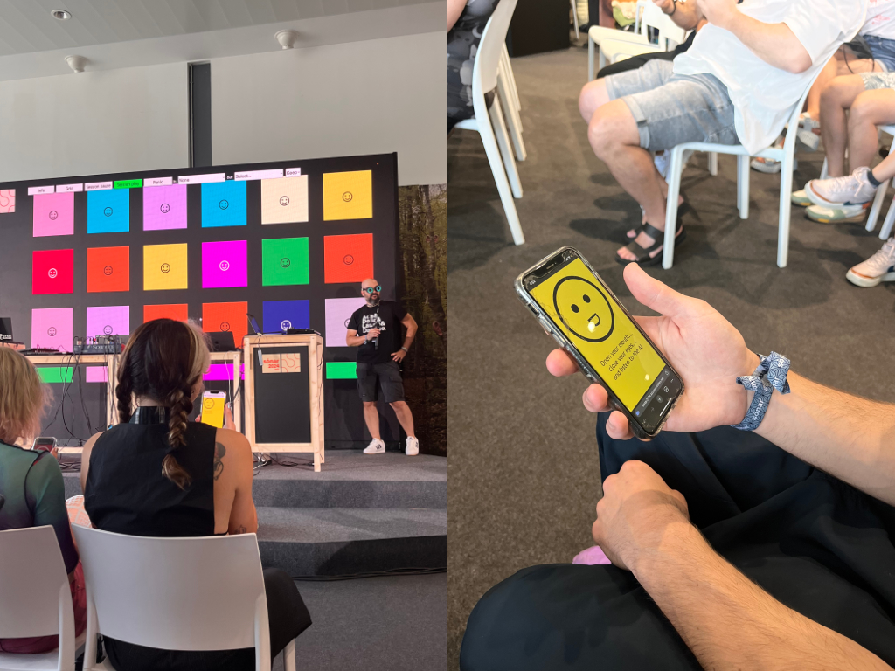

Collaborative sound installation using facial expressions and AI-generated sound

As part of the Sónar 2024 AI Playground hackathon, I developed a collaborative sound installation that allowed participants to generate sound based on facial expressions. Kev Freeney produced the sound samples using AI tools.